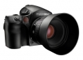

器材库 > 大中画幅可换镜头数码相机 > 645DF

该产品没有存档的规格参数
zhaosg552011-08-04 20:334.13 分
操作性 4.00功能性 4.00美观性 4.50趣味性 3.00耐用性 4.50性价比 3.00解像力 5.00色彩还原 5.00
产品图 / 样片
645DF
评测 / 相关文章
- 详细内容 （存档）
- ［试用］天堂之美 飞思巴厘岛PODAS作品集 （存档）
- ［资讯］玛米亚645DF及数码后背移交飞思销售 （存档）
- ［资讯］飞思图像处理软件Capture One Pro升级 （存档）
- ［资讯］Nauticam推出飞思645DF用水下摄影外壳 （存档）
- ［资讯］中画幅，飞思645DF测试样片欣赏 （存档）
- ［资讯］飞思入股玛米亚数码影像公司 （存档）